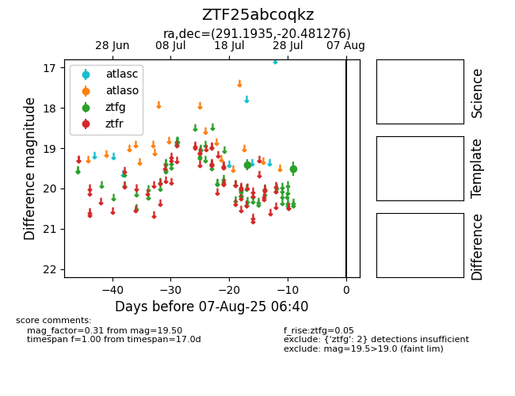

Target ZTF25abcoqkz at 2025-08-07 07:30, see:
FINK: fink-portal.org/ZTF25abcoqkz
Lasair: lasair-ztf.lsst.ac.uk/objects/ZTF25abcoqkz
ALeRCE: alerce.online/object/ZTF25abcoqkz
alt names
ZTF25abcoqkz (ztf,fink)
coordinates:
equatorial (ra, dec) = (291.1935,-20.48128)
galactic (l, b) = (17.8666,-16.28370)
photometry
last ztfg=19.50
2 ztfg detections
